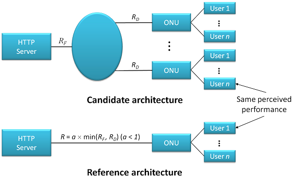
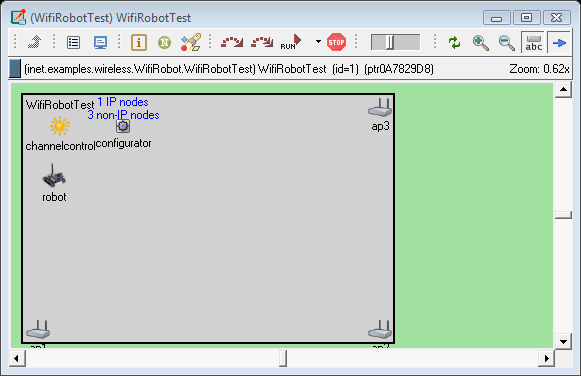

INET-HNRL GitHub Page@github.com
Table of Contents
Introduction
This is the GitHub page of inet-hnrl — a new fork of inet being developed and maintained by the Hybrid Network Research Lab (HNRL) of Swansea University in Wales UK — which provides new models in both optical and wireless networking areas and their hybrid. For updates and news, please visit the project wiki.
Models/Frameworks Implemented
Currently the following major models and research frameworks have been implemented:
Hybrid TDM/WDM-PON
ECR Framework
This is the framework where one can carry out a comparison study of a new next-generation optical access (NGOA) architecture with respect to a reference, point-to-point architecture based on the notion of equivalent circuit rate (ECR)4. The configuration and NED files for this framework are located under "examples/ngoa" directory, whose results are reported in recent submissions5 6 7.

Wi-Fi-based Localization
In an indoor environment the accuracy of global positioning system (GPS) — the most popular positioning system now — is often limited and, sometimes, the system itself becomes unusable. Due to a growing interest in location awareness services and a large number of Wi-Fi access points (APs) deployed, an alternative localization technique based on the received signal strength from APs has been extensively studied in the literature and already deployed in some mobile systems (e.g., smart phones). The models for Wi-Fi-based localization, which are still under active development, are for the investigation of various localization algorithms and evaluation of their performances in a realistic simulation environment.

Footnotes:
1 Fu-Tai An, David Gutierrez, Kyeong Soo Kim, Jung Woo Lee, and Leonid G. Kazovsky, "SUCCESS-HPON: A next-generation optical access architecture for smooth migration from TDM-PON to WDM-PON," IEEE Communications Magazine — Optical Communications Supplement Special Issue on Optical Networking Testbeds (Part 2), vol. 43, no. 11, pp. S40-S47, Nov. 2005. (IEEE)
2 Kyeong Soo Kim, David Gutierrez, Fu-Tai An, and Leonid G. Kazovsky, "Design and performance analysis of scheduling algorithms for WDM-PON under SUCCESS-HPON architecture," IEEE/OSA Journal of Lightwave Technology, vol. 23, no. 11, pp. 3716-3731, Nov. 2005. (IEEE)
3 Kyeong Soo Kim, "Integration of OMNeT++ hybrid TDM/WDM-PON models into INET Framework," submitted to OMNeT++ Workshop 2011, Nov. 25, 2010. (HNRL)
4 N. K. Shankaranarayanan, Zhimei Jiang, and Partho Mishra, "User-perceived performance of Web-browsing and interactive data in HFC cable access networks," Proc. of ICC 2001, Helsinki, Finland, vol. 4, pp. 1264-1268, Jun. 2001. (IEEE)
5 Kyeong Soo Kim, "An equivalent circuit rate-based study of next-generation optical access architectures," presented at OMNeT++ Workshop 2010, Malaga, Spain, Mar. 19, 2010. (ACM)
6 Kyeong Soo Kim, "An equivalent circuit rate-based study of 10-Gb/s next-generation optical access architectures," submitted to Access Systems and Networks Track of ICC 2011, Sep. 19, 2010. (HNRL)
7 Kyeong Soo Kim, "An equivalent circuit rate-based study of 10-Gb/s next-generation optical access architectures," (Extended version) submitted to OSA/IEEE Journal of Optical Communications and Networking (JOCN), Nov. 8, 2010. (HNRL)
Date: 2010-12-01 Wed
HTML generated by org-mode 6.33x in emacs 23